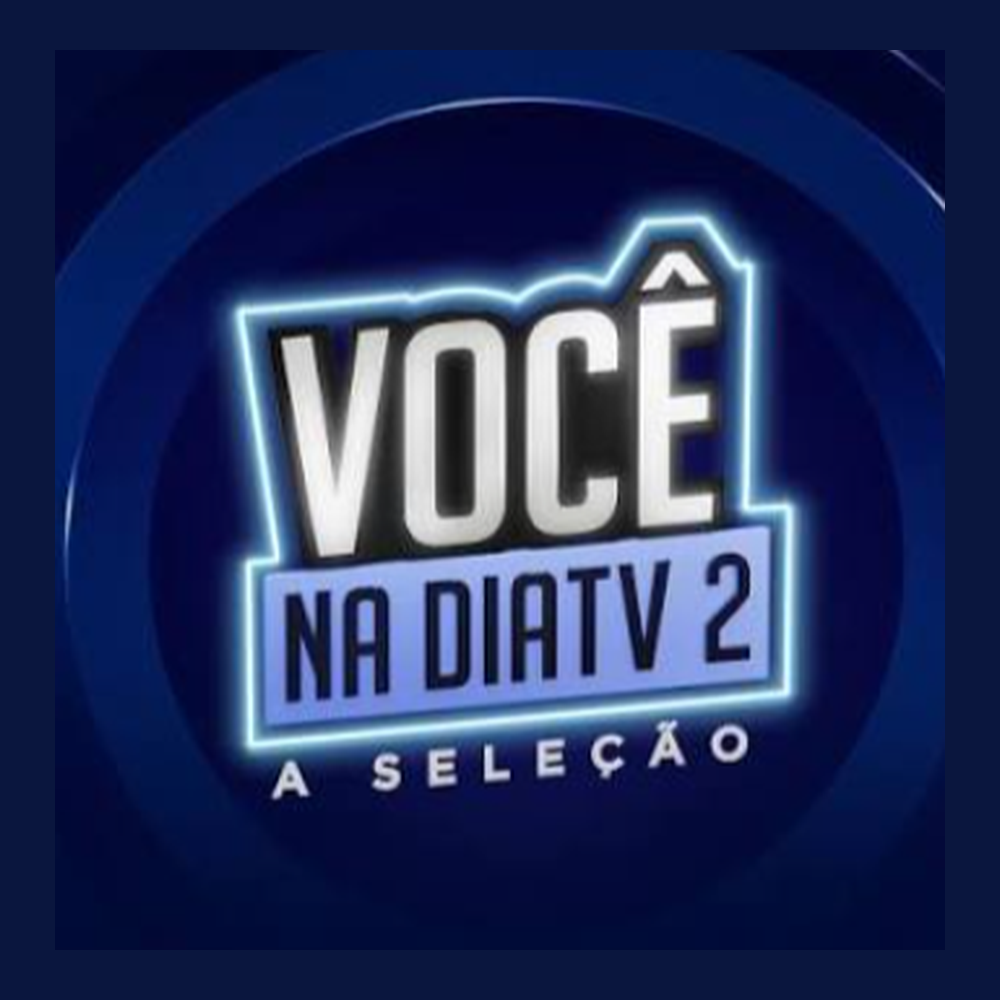

Projeto
DiaTV
Você na DiaTV 2
Produto audiovisual de entretenimento e seleção de talentos da DiaTV. Participação como um dos apresentadores selecionados para o Você na DiaTV 2.
Parceiros: DiaTV

Detalhes
- Atuação
- Participação como apresentador selecionado, presença em dinâmicas audiovisuais e integração ao formato de seleção de talentos da DiaTV.
- Temas
- Entretenimento, cultura digital, apresentação, audiovisual, seleção de talentos e comunicação multiplataforma.